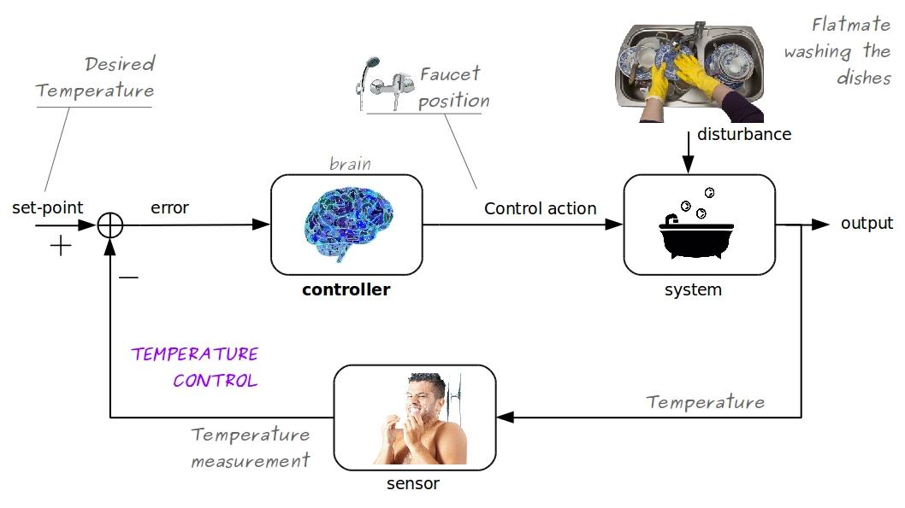
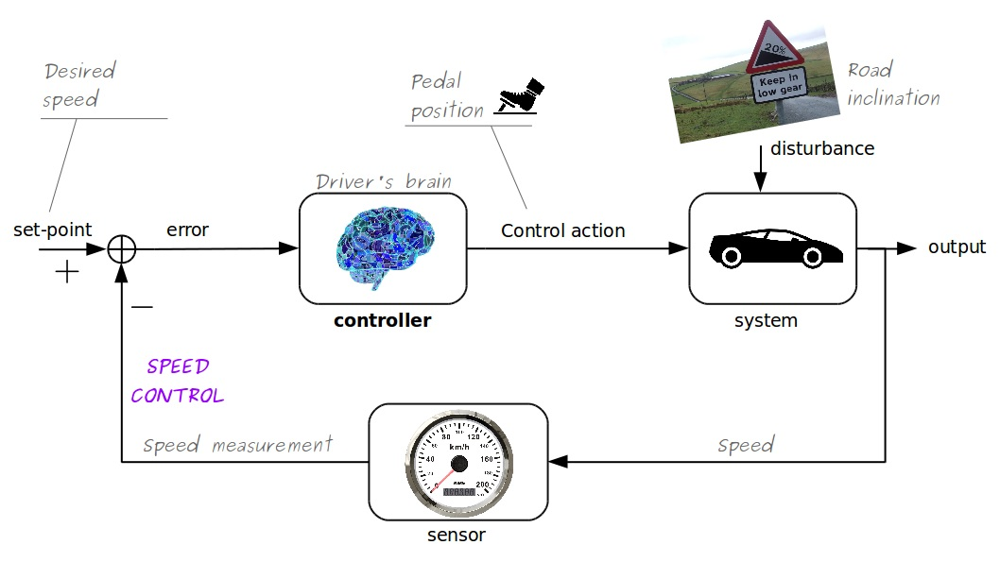
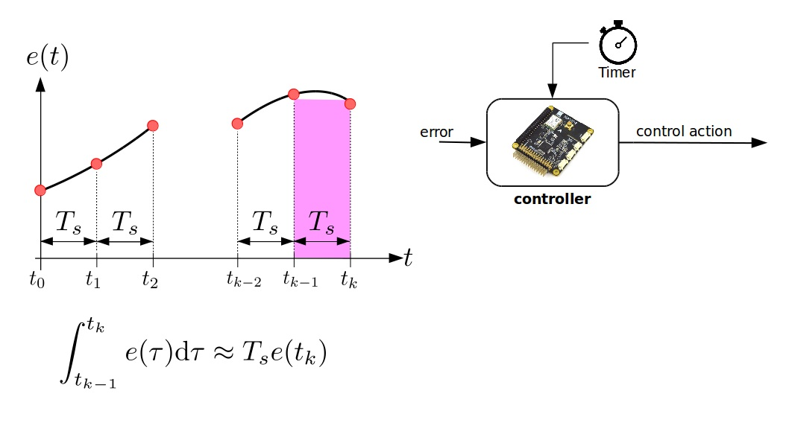

The PID Controller
and its Software Implementation
a gentle introduction
ELE2024, Lecturer: P. Sopasakis
What is control?
a few examples...
Taking a Shower

Define (error) = (set point) - (measurement), that is
$$e(t) = y^{\mathrm{sp}}(t) - y(t)$$
If $e(t){}={}0$ (perfect!) $\Rightarrow$ enjoy!
If $e(t){}>{}0$ (too cold!) $\Rightarrow$ warm up
If $e(t) {}<{} 0$ (too hot!) $\Rightarrow$ cool down
Speed Control

Define (error) = (set point) - (measurement), that is
$$e(t) = y^{\mathrm{sp}}(t) - y(t)$$
If $e(t){}={}0$ (perfect!) $\Rightarrow$ keep going!
If $e(t){}>{}0$ (too slow!) $\Rightarrow$ speed up
If $e(t) {}<{} 0$ (too fast!) $\Rightarrow$ slow down
Lane Keeping
Aircraft Roll Control

Room temperature control
Lane Keeping Feedback Loop
- System: car
- Controlled variable (output): distance from centre of lane, $y(t)$
- Sensor: camera
- Set point: center of lane, $y^{\mathrm{sp}} = 0$
- Error: $e(t) = -y(t)$
- Control action: steering angle, $u(t)$
- Disturbance: alignment of wheels
Lane Keeping Control
Autonomous Driving Technologies
- Control theory
- Image/video/signal processing
- Machine learning
- Optimisation
- Computer science
- Sensors
Autonomous Driving
Pros and Cons?
Challenges
- Safety:
- driving will be safer (hopefully)
- robots don't drink/get tired/get distracted
- Accountability and moral questions:
- whose fault is it when autonomous cars crash?
- insurance
- Socioeconomic:
- towards liberation from labour?
- loss or creation of jobs?
- Regulation:
- is there need for traffic lights?
- Accessibility:
- accessible to disabled and elderly people
- Reduced traffic, higher speeds
- Environmental:
- lower energy consumption
- Security and Privacy:
- continuous surveillance?
- protection of personal data?
- hacking
- software reliability
The P-Controller
Proportional Controller
Steering is proportional to error
$$u(t) = K_p \cdot e(t)$$
Too slow! Let's increase $K_p$.
Too oscillatory!
What if we increase $K_p$ even more?
Increase $K_p$ for a faster response, which may
lead to oscillations
The PD-Controller
Proportional-Derivative Controller
The control action is
$u(t)$ ${}={}$ $K_p e(t)$ ${}+{}$ $K_d
\dot{e}(t)$
That's better!
Let's increase $K_d$ even more...
This is less oscillatory
Let's eliminate the oscillations!
By increasing $K_d$ we have eliminated the oscillations!
Increase $K_d$ to suppress the oscillations
Increase $K_p$ for a faster response, which may
lead to oscillations
The PID-Controller
Proportional-Integral-Derivative Controller
Warning!
All models are wrong*
* George Box, 1976
Offset = $ \lim_{t\to\infty} e(t)$
We must eliminate the offset!
Define $I(t) = \int_0^t e(\tau)\mathrm{d}\tau$
The integral diverges
because $e(t)$ fails to converge to zero...
Let's plug the integral into the controller...
$u(t)$ ${}={}$ $K_p e(t)$ ${}+{}$ $K_d
\dot{e}(t)$ ${}+{}$ $K_i I(t)$
No Offset!
Software Implementation of PID
Digital Control Systems
Digital Control Systems
Digital Approximation of $\dot{e}(t)$
Digital Approximation of $I(t)$

Trapezoidal rule
Digital Approximation of $I(t)$
Discrete-time PID
Discrete-time PID controller
$\begin{align}u(t_k) ={}& \underbrace{K_p e(t_k)}_{\text{Prop.}}
+
\underbrace{K_d \frac{e(t_k) - e(t_{k-1})}{T_s}}_{\text{Deriv. Approx.}}
+
\underbrace{
K_i
\sum_{i=1}^{k}
T_s e(t_i)
}_{\text{Integral Approx.}}
\end{align}$
Discrete-time PID
Discrete-time PID controller
$\begin{align}u(t_k) ={}& K_p e(t_k) + K_d \frac{e(t_k) - e(t_{k-1})}{T_s} + K_i \sum_{i=1}^{k}
T_s
e(t_i)\\ ={}&
K_p e(t_k) + {\color{blue}{K_{d, d}}} (e(t_k) - e(t_{k-1})) + {\color{red}{K_{i, d}}} \sum_{i=1}^{k}e(t_i)
\end{align}$
where $K_{d, d} = \frac{K_d}{T_s}$ and
$K_{i, d} = K_i T_s$.
PID implementation
/* PID implementation (pseudocode) */
previous_error = 0.0, sum_error = 0.0;
/* Initialise variables */
previous_error = setpoint - measured_value;
/* Call the following function at every sampling time */
function compute_control_action(measured_value, setpoint) {
ctrl_error = setpoint - measured_value;
delta_error = ctrl_error - previous_error;
control = P_GAIN_DISCRETE * ctrl_error
+ I_GAIN_DISCRETE * sum_error
+ D_GAIN_DISCRETE * delta_error;
sum_error += ctrl_error;
previous_error = ctrl_error;
return control;
}
Let's recap
|
Control loop - new terms:
|
|
|
PID controller:
|
|
Digital PID controller:
|
Today's Lab
PID controller design for lane keeping
Objective
 |
We will design and test a discrete-time PID controller in Python. |
Python Programming
 |
Why Python?
|
Python in Engineering
- Controller design
- Simlations of dynamical systems
- Optimisation
- Image/video/signal processing
- Machine learning
- Parallel computing
Grading Criteria
- Technical correctness (45%)
- Discussion of the results (15%)
- Quality of presentation (25%) Quality of presentation (25%): (i) clarity, (ii) graphics, (iii) typesetting
- Quality of code (15%): (i) correctness, (ii) style, (iii) docs/comments
- Bonus marks (+10%)
Let's get started!
- Start PyCharm
- Create a new project (Python3.6 with virtualenv)
- Go to File > Settings > Python Interpreter > Add:
numpy, v1.19scipy, v1.5.0matplotlib, v3.2.2